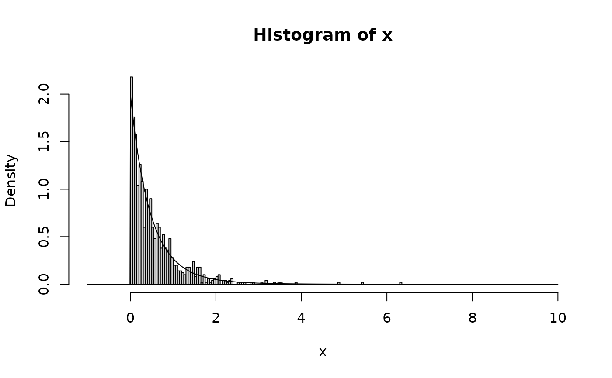
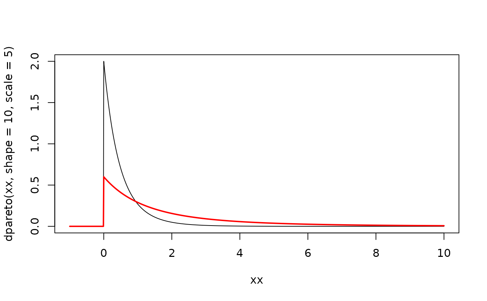
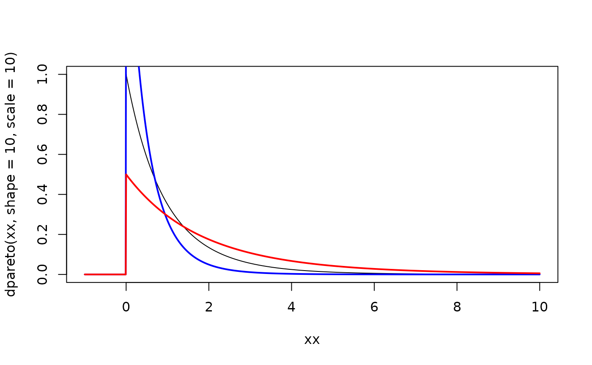

These functions provide information about the Pareto distribution.
dpareto gives the density, ppareto gives the distribution
function, qpareto gives the quantile function and rpareto generates random
deviates.
rpareto(n = 1L, shape = 0, scale = 1) dpareto(x, shape = 1, scale = 1, log = FALSE) ppareto(q, shape = 1, scale = 1, lower.tail = TRUE, log.p = FALSE) qpareto(p, shape = 1, scale = 1, lower.tail = TRUE, log.p = FALSE)
| n | integer number of observations. |
|---|---|
| shape | shape parameter (must be positive). |
| scale | scale parameter (must be positive). |
| x, q | vector of quantiles. |
| log, log.p | logical; if |
| lower.tail | logical; if |
| p | vector of probabilities. |
rpareto generates random deviates.
dpareto gives the density.
ppareto gives the distribution function.
qpareto gives the quantile function.
If shape or scale are not specified, they assume the default values of 1.
The Pareto distribution with scale \(\theta\) and shape \(\xi\) has density
$$f(x) = \xi \theta^\xi / (x + \theta)^(\xi + 1)$$
The support is \(x \ge 0\).
The Expected value exists if \(\xi > 1\) and is equal to
$$E(X) = \theta / (\xi - 1)$$
k-th moments exist in general for \(k < \xi\).
https://en.wikipedia.org/wiki/Pareto_distribution - named Lomax therein.
x <- rpareto(1000, shape = 10, scale = 5) xx <- seq(-1, 10, 0.01) hist(x, breaks = 100, freq = FALSE, xlim = c(-1, 10)) lines(xx, dpareto(xx, shape = 10, scale = 5))  plot(xx, dpareto(xx, shape = 10, scale = 5), type = "l") lines(xx, dpareto(xx, shape = 3, scale = 5), col = "red", lwd = 2)  plot(xx, dpareto(xx, shape = 10, scale = 10), type = "l") lines(xx, dpareto(xx, shape = 10, scale = 5), col = "blue", lwd = 2) lines(xx, dpareto(xx, shape = 10, scale = 20), col = "red", lwd = 2) 